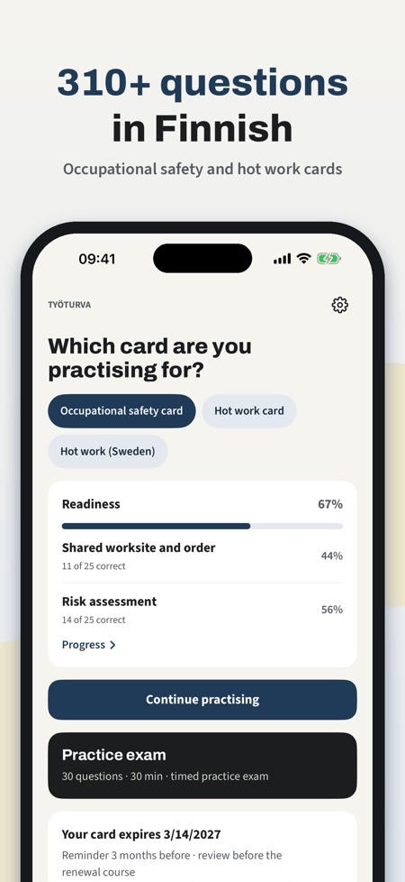
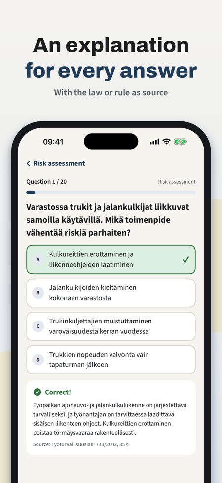
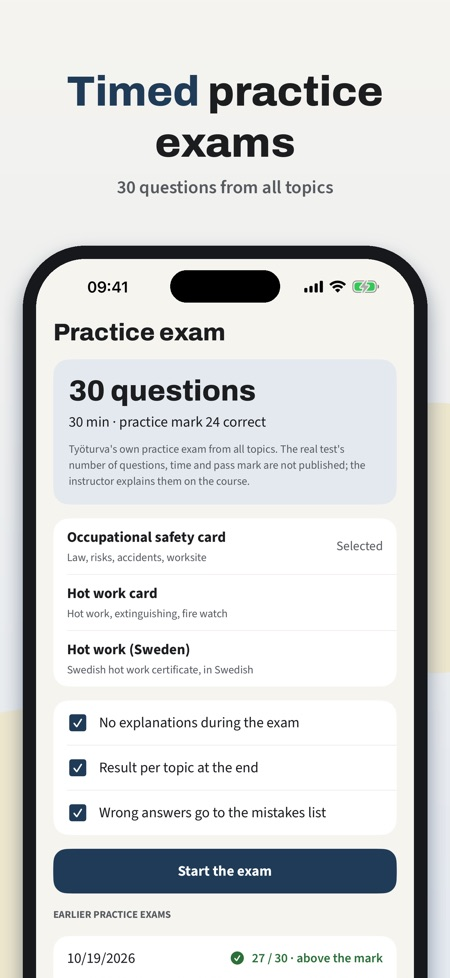

Finnish safety card practice. Practise for the Finnish occupational safety card and hot work card tests: questions with explanations, mock exams and a reminder before your card expires.



Työturva helps you prepare for the Finnish occupational safety card (työturvallisuuskortti, TTK) and hot work card (tulityökortti) tests – before the course or before renewing your card.
Some of the questions, one full mock exam, a 10-question mini exam, the glossary and the expiry reminder can be used without a purchase. A one-time purchase unlocks all questions, unlimited mock exams, mistake review and statistics. No subscription.
Työturva is an independent practice app. It is not an app of Työturvallisuuskeskus, SPEK or any course provider and does not issue cards; the card is only issued after a course with an instructor. Questions are our own, written from the published topic areas. The questions are in Finnish (safety and hot work card) and Swedish (heta arbeten).